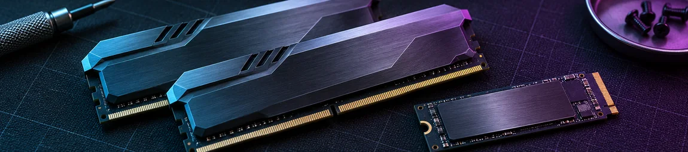

RAM günstig kaufen: So findest du ein passendes Angebot
Ein günstiges RAM-Angebot hilft dir nur, wenn der Speicher in deinem Rechner funktioniert und du ihn wirklich brauchst. Zum Glück musst du dafür nicht jede technische Abkürzung auswendig kennen. Wir gehen die Angaben in der Reihenfolge durch, die unnötige Käufe am ehesten verhindert.

Lege zuerst fest, welchen RAM dein PC unterstützt
Beginne beim Mainboard- oder Gerätehandbuch, nicht beim Rabatt. Dort findest du die unterstützte Speicherart, Kapazität und Bestückung. Die Modellbezeichnung deines Mainboards oder Komplett-PCs ist dafür der wichtigste Suchbegriff.
DDR4 und DDR5 sind unterschiedliche Generationen und nicht austauschbar. Dazu kommt die Bauform: Desktop-PCs nutzen häufig längere DIMM-Module, Notebooks oft kleinere SO-DIMMs. Ausnahmen gibt es; bei verlötetem Speicher lässt sich nicht einfach ein Riegel einsetzen.
Notiere diese Angaben, bevor du Shops öffnest. Dann kannst du unpassende Angebote sofort aussortieren.
Kaufe die Kapazität, die dir tatsächlich hilft
Wenn du von 16 auf 32 GB wechseln möchtest, kläre zuerst, warum. Geht der Speicher bei deinen Spielen und Hintergrundprogrammen regelmäßig aus, ist das ein nachvollziehbarer Grund. Läuft alles problemlos, ist ein Rabatt allein kein Anlass für ein Upgrade.
Bei einem neuen PC musst du den RAM zusammen mit den anderen Bauteilen betrachten. Ein unnötig großes Kit kann Geld verbrauchen, das dir an anderer Stelle mehr bringen würde. Die Entscheidung erklären wir ausführlich in 16 oder 32 GB RAM?
Achte beim Vergleich auch auf die Aufteilung: 32 GB als 2 × 16 GB und 32 GB als 1 × 32 GB sind verschiedene Konfigurationen. Welche zu deinem System passt, hängt von den Speicherkanälen, verfügbaren Steckplätzen und deinen Erweiterungsplänen ab.
Welche Angaben zu Geschwindigkeit musst du verstehen?
Bei einem Namen wie „DDR5-6000 CL30“ steht 6000 für die angegebene Datenrate in Millionen Transfers pro Sekunde, kurz MT/s. CL30 bezeichnet eine bestimmte Latenz in Taktzyklen. Eine kleinere CL-Zahl ist daher nur im passenden Zusammenhang vergleichbar; sie allein macht ein Kit nicht schneller.
Für die Kaufentscheidung ist zunächst wichtiger, dass der Speicher unterstützt wird und stabil arbeitet. Beworbene Geschwindigkeiten können ein XMP- oder EXPO-Profil voraussetzen. Solche Profile müssen von deiner Plattform unterstützt werden und sind nicht in jeder Kombination garantiert erreichbar.
Wenn du dich damit nicht beschäftigen möchtest, orientiere dich an den Herstellerempfehlungen für dein Gerät. Ein besonders hoher Takt auf der Verpackung ist wenig wert, wenn du ihn nur mit zusätzlicher Fehlersuche oder gar nicht nutzen kannst.
Vergleiche exakt dasselbe Kit
| Prüfpunkt | Warum er wichtig ist |
|---|---|
| Artikelnummer | Ähnliche Produktnamen können unterschiedliche Kits bezeichnen. |
| Gesamtkapazität und Modulzahl | 2 × 16 GB ist nicht dasselbe Angebot wie 1 × 32 GB. |
| DDR-Generation und Bauform | Sie müssen zu deinem Gerät passen. |
| Geschwindigkeit und Profile | Damit vergleichst du die tatsächlich angebotene Variante. |
| Zustand, Händler und Versand | Sie beeinflussen Gesamtpreis und Abwicklung. |
Suche mit der Artikelnummer in einem Preisvergleich und kontrolliere anschließend die Angaben im Shop. Ein Set mit Beleuchtung oder aufwendigem Kühlkörper ist nicht automatisch der bessere Kauf. Prüfe bei großen CPU-Kühlern außerdem, ob hohe RAM-Module darunter passen.
Solltest du ein bestehendes Kit ergänzen?
Ein freier Steckplatz macht ein Upgrade möglich, garantiert aber keine problemlose Kombination. Auch einzeln erhältliche Module mit ähnlichen Daten müssen zusammen nicht dieselben Einstellungen schaffen. Bei mehreren Kits können niedrigere Taktraten oder weitere Anpassungen nötig werden.
Prüfe deshalb die Vorgaben des Mainboard-Herstellers für die geplante Bestückung. Wenn Zuverlässigkeit und einfache Einrichtung für dich Priorität haben, kann ein einziges abgestimmtes Kit sinnvoller sein als das Kombinieren verschiedener vorhandener Module.
Bei gebrauchtem RAM solltest du die genaue Artikelnummer, den Zustand und die Bedingungen des Verkaufs kennen. Eine Funktionsprüfung ist hilfreich; ein Foto der Verpackung belegt sie nicht. Kalkuliere Zeit für einen eigenen Speichertest ein, statt den Preis isoliert zu betrachten.
Wann lohnt sich Warten auf ein Angebot?
Wenn dein Rechner funktioniert und kein Engpass vorliegt, kannst du ein passendes Kit beobachten und eine persönliche Preisgrenze festlegen. Eine sichere Vorhersage, wann RAM wieder günstiger wird, lässt sich daraus nicht machen.
Brauchst du den Speicher jetzt, vergleiche verfügbare passende Kits zum Gesamtpreis. Der günstigste Kauf ist letztlich der, der dein Problem löst und ohne unnötige Zusatzkäufe in deinem System funktioniert. Die RAM-Auswahl auf PCScout ist ein Ausgangspunkt; überprüfe jede Variante vor der Bestellung im Händlerangebot.
Quellen und weitere Informationen
- Kingston: Unterschiede zwischen DDR-Speichergenerationen
- Kingston: DDR5-Konfigurationen auf AMD-Ryzen-Systemen
- Kingston: Arbeitsspeicherbedarf von Spielen und Hintergrundprogrammen
- Kingston Support: Kit-Bestückung, Speicherprofile und Kompatibilität
- Kingston Support: Datenrate in MT/s und gemischte Module